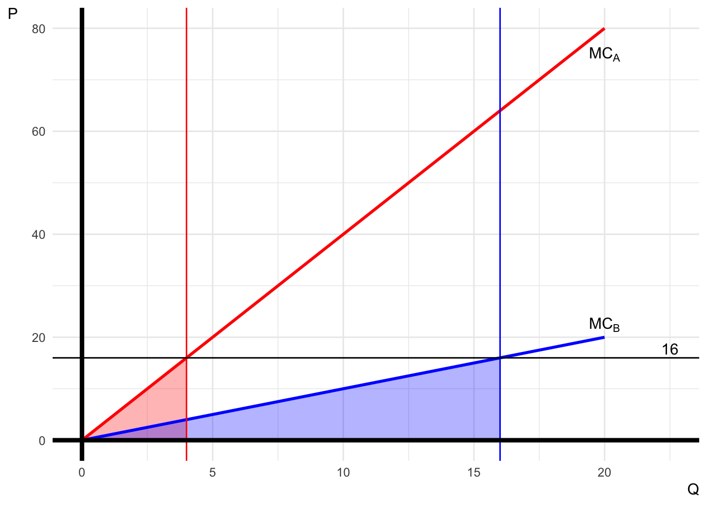

Midterm Exam II
Classwork 7
Section 1. Multiple Choice
Question 1
Which of the following best describes the travel-cost method in environmental and natural resource economics?
- It directly measures market prices of environmental goods.
- It infers the value of a recreational site by examining visitors’ travel expenditures.
- It uses surveys to estimate individuals’ willingness to pay for non-use values.
- It calculates environmental values based on property taxes.
Answer: B
Explanation: The travel-cost method is a revealed preference approach that estimates the economic value of recreational sites by analyzing how much visitors spend to travel to those sites. This includes costs like transportation, accommodation, and time. By observing these expenditures, economists can infer visitors’ willingness to pay and construct a demand curve for the site.
Question 2
Averting expenditures are useful in environmental valuation because they:
- Provide an exact measure of environmental damages.
- Offer a lower-bound estimate of the willingness to pay to avoid environmental harm.
- Represent the total cost of environmental degradation.
- Are unaffected by individual income levels.
Answer: B
Explanation: Averting or “avoidance” expenditures are costs incurred by individuals to prevent or reduce exposure to environmental harms (e.g., buying bottled water due to water pollution). Since people would not normally spend more to prevent a problem than would be caused by the problem itself, averting expenditures can provide a lower-bound estimate of the damage caused by pollution.
Question 3
Which of the following is NOT a necessary condition for carbon pricing to achieve cost-effectiveness in emissions reduction?
- The price on emissions should be applied to all greenhouse gases measured as CO2e.
- All emitters should face the same price per ton of CO2e.
- The carbon price should be adjusted periodically to reflect inflation.
- The price should be applied to all emission sources of those gases.
Answer: C
Explanation: Adjusting the carbon price for inflation is not listed as a necessary condition for cost-effectiveness. The necessary conditions include applying the price to all greenhouse gases via CO2e, covering all emission sources, and ensuring all emitters face the same price per ton of CO2e to equalize marginal costs of abatement.
Question 4
In comparing carbon taxes and emissions trading programs, which of the following statements is TRUE?
- Carbon taxes set the price, and the resulting emissions are uncertain.
- Emissions trading programs set the price, and the resulting emissions are uncertain.
- Carbon taxes set the emissions level, and the resulting price is uncertain.
- Emissions trading programs set both the emissions level and the price.
Answer: A
Explanation: Carbon taxes involve the government setting the price (tax rate), and the market determining the resulting level of emissions, making emissions uncertain. Emissions trading programs set the emissions cap, and the market determines the price.
Question 5
The primary concern with output-based carbon pricing systems is that they:
- Implicitly subsidize output, leading to lower emissions.
- Are more cost-effective than traditional ETS designs.
- Implicitly subsidize output, leading to higher costs and reduced cost-effectiveness.
- Do not account for differences in technology and fuel types.
Answer: C
Explanation: Output-based systems can implicitly subsidize output since allowances are tied to production levels, potentially leading to higher costs and less cost-effective emissions reductions compared to traditional ETS designs.
Question 6
According to the IPCC, what are the two main types of adaptation policies?
- Structural and Non-structural adaptation
- Proactive and Reactive adaptation
- National and International adaptation
- Private and Public adaptation
Answer: B
Explanation: The IPCC outlines two types of adaptation policies: proactive policies, which involve taking action in anticipation of a climate change impact, and reactive policies, which are taken in response to a climate change impact that has already occurred.
Question 7
In the context of flood insurance in the United States, which of the following is a perverse incentive created by the National Flood Insurance Program (NFIP)?
- Encouraging homeowners to move away from flood-prone areas.
- Requiring higher premiums for higher-risk areas.
- Allowing homeowners to rebuild in the same flood-prone locations after flooding events.
- Providing accurate flood risk information to homeowners.
Answer: C
Explanation: The NFIP requires that funds paid out in damage claims be used to rebuild a house in the same location, which encourages rebuilding in high-risk areas rather than reducing risk.
Section 2. Fill-in-the-Blanks Questions
Question 8
The free-rider effect is a major challenge in forming international climate agreements because countries benefit from others’ emission reductions without participating themselves.
Question 9
Mitigation strategies aim to moderate the temperature rise by reducing greenhouse gas emissions.
Question 10
For carbon pricing to be cost-effective, the price on emissions should be applied to all greenhouse gases via carbon dioxide equivalents (CO₂e), which is used to express the impact of different greenhouse gases in terms of the amount of CO₂ that would have the same global warming potential over a specific time horizon, usually 100 years.
Question 11
In the context of climate change adaptation, the vulnerability of a particular location is determined by examining the level of exposure to the risks and the number and types of hazards faced.
Question 12
An increase in resilience could reduce nations’ vulnerability to disasters as well as the costs they impose. In the context of ecology, resilience refers to an ecosystem’s ability to bounce back (recover) from a shock.
Section 3. Short Essay
Question 13
- What is the Value of Statistical Life (VSL)?
- Discuss how the concept of VSL can influence the Social Cost of Carbon (SCC) and policies related to climate change mitigation.
Answer: The VSL is an economic measure that estimates the monetary value people place on reducing the risk of death. VSL is calculated by dividing an individual’s willingness to pay for a specific reduction in mortality risk by the magnitude of that risk reduction. This calculation reflects the trade-off between money and a small change in mortality risk.
The VSL plays a crucial role in calculating the SCC, which estimates the economic damages associated with a metric ton of CO₂ emissions. By incorporating VSL, policymakers can quantify the mortality risks associated with climate change, such as deaths from extreme weather events or heatwaves.
Including VSL in SCC calculations increases the estimated damages from carbon emissions, highlighting the human health benefits of reducing emissions. This, in turn, can justify more aggressive climate policies and regulations by showing that the benefits of emission reductions (in terms of saved lives) outweigh the costs.
Moreover, acknowledging the mortality risks and assigning them a monetary value ensures that policies account for the full spectrum of climate change impacts. It strengthens the argument for urgent action and can influence international agreements and national regulations aimed at mitigating climate change.
Question 14
Discuss the concept of “tipping points” in climate change and their implications for policy-making.
Answer: Tipping points in climate change refer to critical thresholds in the Earth’s system, where a small perturbation can qualitatively alter the state or development of a system. Once a tipping point is crossed, it can lead to significant and often irreversible changes in the environment, such as the rapid melting of polar ice caps, dieback of the Amazon rainforest, or thawing of permafrost, which releases large amounts of greenhouse gases.
The implications for policy-making are profound. First, tipping points introduce a high level of uncertainty and risk, as the exact thresholds and outcomes are not always predictable. This uncertainty necessitates a precautionary approach to climate policy, advocating for earlier and more aggressive emission reductions to minimize the risk of crossing these thresholds.
Second, tipping points can lead to non-linear and accelerated climate impacts, making it more challenging to adapt. Policies must, therefore, focus not only on gradual emission reductions but also on resilience and adaptive capacity to cope with sudden changes.
Lastly, the potential for catastrophic outcomes increases the social cost of carbon, justifying higher carbon prices and more stringent regulations. Policymakers must consider the fat-tailed nature of climate risks, where extreme events have a higher probability than traditionally estimated, warranting urgent and comprehensive climate action.
Question 15
- What does “just transition” mean in the context of climate change?
- Explain how the design of carbon pricing policies can support a just transition, particularly in addressing distributional effects (i.e., how the costs and benefits of the policy are shared among different income groups, communities, and industries) and the strategic use of revenue to promote fairness and equity.
Answer: A just transition ensures that the move toward a low-carbon economy is fair and inclusive, addressing the needs of vulnerable populations who might be disproportionately affected by climate policies. Carbon pricing, as a key policy tool for reducing emissions, must be designed carefully to support a just transition.
- Distributional Effects:
- Regressive Impact of Carbon Pricing: Carbon pricing can be regressive because lower-income households spend a higher percentage of their income on energy and carbon-intensive goods. Without intervention, these households bear a disproportionate burden of the costs.
- Benefits of Emissions Reductions: Lower-income communities often suffer more from the adverse effects of climate change, so they stand to gain significantly from emissions reductions.
- Use of Revenue (Revenue Recycling): The way carbon pricing revenue is used critically affects the policy’s equity. Options include:
- Progressive Rebates or Dividends: Returning revenue to households, particularly targeting lower-income groups, can offset higher energy costs and even provide a net benefit.
- Targeted Investments: Investing in energy efficiency, public transportation, and renewable energy projects in disadvantaged communities can reduce energy costs and improve living conditions.
- Job Training and Transition Assistance: Allocating funds to retrain workers from carbon-intensive industries supports employment and eases the economic transition.
- Supporting Small Businesses: Assisting small businesses in adapting to higher energy costs ensures they remain competitive and can contribute to economic growth. Policy Design Considerations:
- Transparency and Participation: Engaging communities in policy design enhances legitimacy and ensures that policies address specific local needs.
- Flexibility: Policies should be adaptable to changing economic conditions to prevent unintended hardships.
- Complementary Measures: Combining carbon pricing with other policies, such as social safety nets and labor policies, can mitigate negative impacts on vulnerable groups.
Section 4. Analytical Questions
Question 16
Suppose there are two firms, Firm A and Firm B, both emitting greenhouse gases (GHGs) The government aims to reduce total GHG emissions by 20 units. The marginal cost (MC) of GHG emission reduction for the two firms are given by:
- Firm A: \(\text{MC}_A = 4Q_A\)
- Firm B: \(\text{MC}_B = Q_B\)
where \(Q_A\) and \(Q_B\) are the quantities of GHG emission reduction by Firm A and Firm B, respectively.
(a)
Determine the cost-effective allocation of GHG emission reduction between Firm A and Firm B to achieve the total GHG emission reduction of 20 units.
Answer:
To achieve cost-effectiveness, the marginal abatement costs must be equal across both firms:
\[ \begin{align} MC_{A} &= MC_{B}\\ 4Q_{A} &= Q_{B}\tag{1} \end{align} \] The total GHG emission reduction required is: \[ Q_A + Q_B = 20\tag{2} \]
Solving the system of the two equations (1) and (2) gives:
\[ Q_{A}^{o} = 4,\; Q_{B}^{o} = 16 \]
(b)
Calculate the total cost of GHG emission reduction for each firm under this cost-effective allocation.
Answer:
The total cost of each firm’s pollution reduction is the triangle area under the each firm’s \(MC\) curve:
\[ \begin{align} TC_{A} &= \frac{1}{2}\times 4 \times 16 = 32\\ TC_{B} &= \frac{1}{2}\times 16 \times 16 = 128 \end{align} \]
(c)
Suppose the government imposes a carbon tax of \(T\) dollars per unit of GHG emissions to achieve the total reduction of 20 units. Determine the tax rate \(T\) that would achieve the desired GHG emission reduction.
Answer:
Firms will abate GHG emissions until:
\[ MC = T \] For Firm A:
\[ \begin{align} MC_{A} &= T\\ 4Q_{A} &= T\\ Q_{A} &= \frac{T}{4} \end{align} \] For Firm B:
\[ \begin{align} MC_{B} &= T\\ Q_{B} &= T \end{align} \]
Total GHG emissions reduction is \[ \begin{align} Q_{A} + Q_{A} &= 20\\ \frac{T}{4} + T &= 20\\ T^{o} &= 16 \end{align} \]
Therefore, the cost-effective carbon tax rate \(T^{o}\) is $16 per per unit of GHG emissions.
In the absence of government intervention, self-interested firms are unlikely to reduce GHG emissions, as doing so incurs additional costs. However, implementing a carbon tax incentivizes these firms to lower their emissions, thereby achieving the cost-effective level of GHG emissions.
Question 17
Consider two major economies, Country A and Country B, deciding whether to implement strict climate change policies. Each country can choose to either “Reduce Emissions” or “Continue Business as Usual (BAU).” The payoff matrix below shows the economic benefits (in billions of dollars) for each country over a 10-year period.
In this context, two parameters, \(b\) and \(c\), can influence the payoffs, potentially increasing or decreasing them depending on the situation:
| CountryB | |||
|---|---|---|---|
| Reduce | BAU | ||
| CountryA | Reduce | (5, 5) | (-2 + b, 8 - c) |
| BAU | (8 - c, -2 + b) | (1 - c, 1 - c) | |
Note that the order of values in the parenthesis means (Country A’s payoff, Country B’s payoff).
(a)
What are the conditions on the parameter values \(b\) and \(c\) such that (Reduce, Reduce) is the only Nash equilibrium?
Note that the order of strategies in this parenthesis means (Country A’s strategy, Country B’s strategy).
Answer:
For the unique (Reduce, Reduce) NE, the following conditions can be considered:
- Country A’s best response to Country B’s Reduce is Reduce:
\[ \begin{align} \overbrace{5}^{\text{Country A's Payoff from Reduce}} & > \overbrace{8 -c}^{\text{Country A's Payoff from BAU}}\\ \quad\\ \Leftrightarrow\qquad\qquad\qquad\qquad c & > 3\tag{1} \end{align} \]
- Country A’s best response to Country B’s BAU is Reduce:
\[ \begin{align} \overbrace{-2+b}^{\text{Country A's Payoff from Reduce}} &> \overbrace{1 -c}^{\text{Country A's Payoff from BAU}}\\ \quad\\ \Leftrightarrow\qquad\qquad\qquad b + c &> 3\tag{2} \end{align} \]
Since the payoff structure is symmetric between the two countries, we will derive the same conditions as in equations (1) and (2) if we consider Country B’s best response to Country A’s strategy.
Conditions (1) and (2) ensure that both countries find it in their best interest to “Reduce” emissions regardless of the other country’s action, making (Reduce, Reduce) the only stable outcome.
(b)
- Provide examples of “issue linkage” that could influence the parameters \(b\) and \(c\).
- In your examples, describe a situation where the issue linkage you propose fails to satisfy the conditions derived in part (a).
Answer:
- Carbon Border Adjustment Mechanism (CBAM) or Other Economic Sanction Increasing \(c\):
- Scenario: Country A implements a CBAM that imposes tariffs or taxes on imported goods based on their carbon content. This means that if Country B continues with BAU and does not reduce emissions, its exports to Country A become more expensive due to the carbon tariffs.
- Impact on \(c\): The parameter \(c\) represents the additional cost to a country that continues with BAU while the other reduces emissions. The implementation of CBAM increases \(c\) for Country B because its goods face higher tariffs, making the BAU option less attractive. This incentivizes Country B to also reduce emissions to avoid the tariffs.
- Trade Agreements Enhancing \(b\):
- Scenario: Countries A and B agree that if either country reduces emissions while the other does not, the country reducing emissions will receive favorable trade terms from the other country.
- Impact on \(b\): The parameter \(b\) represents additional benefits to a country that unilaterally reduces emissions. By linking emission reductions to trade benefits, \(b\) increases, making unilateral reduction more attractive.
- Technology Sharing Agreements Affecting \(b\) and \(c\):
- Scenario: Countries agree that if both reduce emissions, they will share green technology, but if a country continues BAU, it loses access to this technology.
- Impact on \(b\) and \(c\):
- \(b\): The country reducing emissions gains additional technological benefits, increasing \(b\).
- \(c\): The country continuing BAU incurs opportunity costs from lost technology access, increasing \(c\).
- Situation Where Issue Linkage Fails to Satisfy Conditions from Part (a):
- Scenario: Weak Environmental Aid Reduces \(b\) Below Required Threshold
- Description: Countries agree that if one reduces emissions while the other does not, the reducing country will receive minimal environmental aid from international organizations, insufficient to offset the costs of reducing emissions.
- Impact on \(b\): The parameter \(b\) increases slightly but not enough to satisfy the condition \(b + c > 3\). - Given \(c > 3\): Even if \(c\) exceeds 3 due to other factors (e.g., moderate/stringent sanctions), the negative value in \(b\) can imply \(b + c \leq 3\). - Weak issue linkage can imply imply \(b + c \leq 3\).
- Result: The inequality \(b + c > 3\) is not satisfied.
- Consequence: Country A (and similarly Country B) may prefer “BAU” when the other country chooses “BAU”, leading to a NE of (BAU, BAU).
Summary:
- The weak issue linkage fails to create strong enough incentives for unilateral emission reductions.
- Countries may revert to “BAU” in anticipation that the benefits of reducing emissions are outweighed by the costs.
- The failure to meet the condition \(b + c > 3\) means “Reduce” is not a dominant strategy, and (Reduce, Reduce) is no longer the only NE.